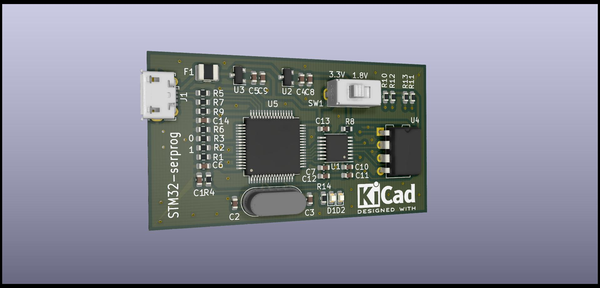

serprog¶
概述¶
serprog是flashrom支持的众多编程器中的一种，可以通过串口操作单片机来给spi flash编程，在flashrom的wiki中介绍了多种平台的实现。
我最开始是从Linux 下离线烧写 SPI 闪存这篇博客中了解到这种编程器，对此比较感兴趣，于是仔细阅读了一下原博主的文章和代码仓库，并对serprog的协议进行了研读。
lpc-serprog¶
接上文，正好有一块lpc54114-lite开发板，该开发板有一片板载spi flash，而且微控制器具有usb设备外设，恰好可以满足要求，于是便在该开发板上进行了简单实现。
代码编写完成后进行了简单的测试，结果如下：
# 读flash, W25X80, 1MiB
$ time sudo flashrom -p serprog:dev=/dev/ttyACM0:4000000 -c W25X80 -r /tmp/test.bin
flashrom on Linux 4.19.0-16-amd64 (x86_64)
flashrom is free software, get the source code at https://flashrom.org
Using clock_gettime for delay loops (clk_id: 1, resolution: 1ns).
serprog: Programmer name is "lpc-serprog"
Found Winbond flash chip "W25X80" (1024 kB, SPI) on serprog.
Reading flash... done.
real 0m3.106s
user 0m1.163s
sys 0m0.055s
# 擦除flash, W25X80, 1MiB
$ time sudo flashrom -p serprog:dev=/dev/ttyACM0:4000000 -c W25X80 -E
flashrom on Linux 4.19.0-16-amd64 (x86_64)
flashrom is free software, get the source code at https://flashrom.org
Using clock_gettime for delay loops (clk_id: 1, resolution: 1ns).
serprog: Programmer name is "lpc-serprog"
Found Winbond flash chip "W25X80" (1024 kB, SPI) on serprog.
Erasing and writing flash chip... Erase/write done.
real 0m25.594s
user 0m23.017s
sys 0m0.065s
# 写flash, W25X80, 1MiB
$ time sudo flashrom -p serprog:dev=/dev/ttyACM0:4000000 -c W25X80 -w /tmp/test.bin
flashrom on Linux 4.19.0-16-amd64 (x86_64)
flashrom is free software, get the source code at https://flashrom.org
Using clock_gettime for delay loops (clk_id: 1, resolution: 1ns).
serprog: Programmer name is "lpc-serprog"
Found Winbond flash chip "W25X80" (1024 kB, SPI) on serprog.
Reading old flash chip contents... done.
Erasing and writing flash chip... Erase/write done.
Verifying flash... VERIFIED.
real 0m17.041s
user 0m2.757s
sys 0m0.717s
flashrom在使用serprog进行操作时，在sync命令阶段会花费1s的时间，除去sync阶段1s的时间来看读写速度还是不错的，虽然相较于原博主的实现读写速度略有不急，不过这里并未做太多优化，而且日常拿来使用也够用了。
stm32-serprog¶
为了同时支持3.3V与1.8V spi flash读写的支持，参考Linux 下离线烧写 SPI 闪存文章中github仓库中的原理图绘制了一块PCB，并增加了电平转换芯片和切换开关，由于目前恰好有几片stm32f103R8T6，便使用该微控制器作为stm32-serprog的主控，使用一片txs0108来做电平转换（其实这里使用txs0104/txb0104便可以了，不过绘制原理图时未注意到，因此使用了txs0108，v0.2已经做了修改），程序的话可以直接使用原博主仓库中的代码，pcb效果如如下。

该项目详细情况可以在ieiao/stm32-serprog中查看。